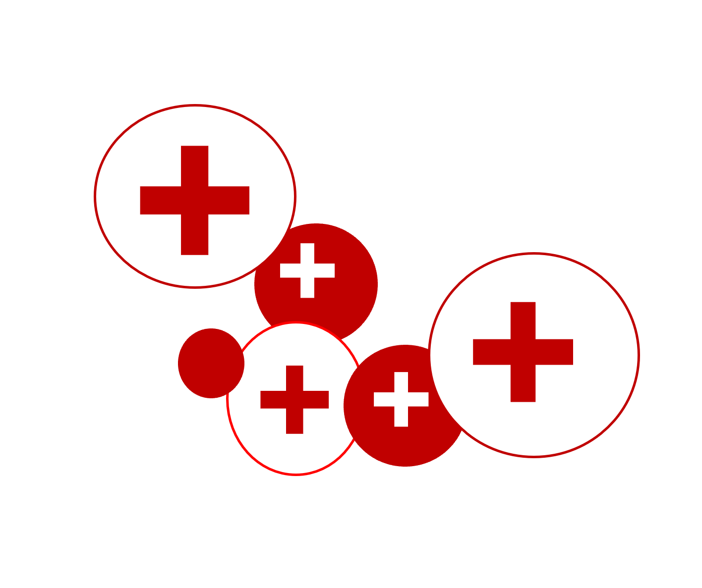
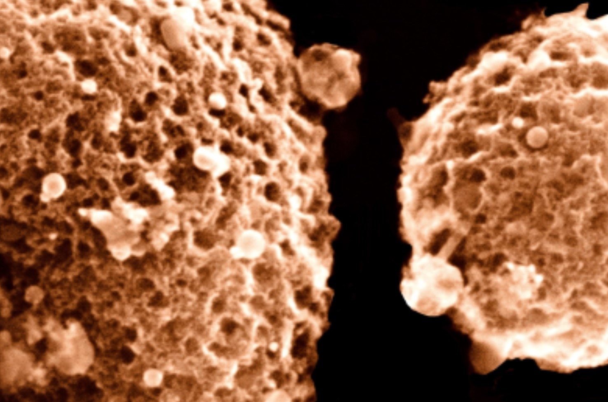

Research focused on data center analytics, environmental footprint assessment, energy management, and infrastructure planning

Current research works span data center analytics, machine learning and AI applications, aerosol deposition in mucus pathways, and nanoparticle synthesis for drug delivery
Research focused on data center analytics, environmental footprint assessment, energy management, and infrastructure planning

Research focused on aerosol deposition on mucus linings and investigating deposition patterns, and changes in mucus characteristics.

Nanoparticle synthesis using furnace and flame aerosol reactors for various apllications.